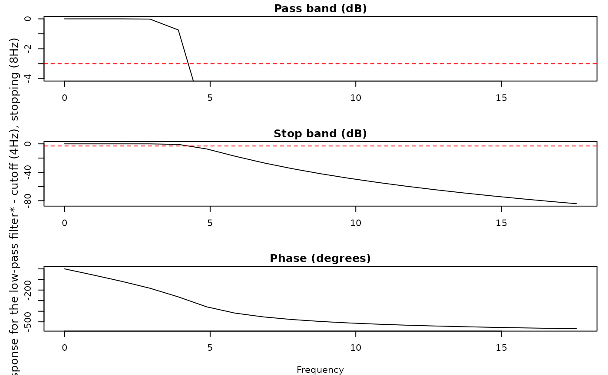

Run eyeris commands with automatic logging of R console's stdout and stderr
Source: R/utils-eyelogger.R
eyelogger.RdThis utility function evaluates eyeris commands while automatically
capturing and recording both standard output (stdout) and standard error
(stderr) to timestamped log files in your desired log directory.
Details
Each run produces two log files:
<timestamp>.out: records all console output<timestamp>.err: records all warnings and errors
Examples
eyelogger({
message("eyeris `glassbox()` completed successfully.")
warning("eyeris `glassbox()` completed with warnings.")
print("some eyeris-related information.")
})
#> eyeris `glassbox()` completed successfully.
#> Warning: eyeris `glassbox()` completed with warnings.
eyelogger({
glassbox(eyelink_asc_demo_dataset(), interactive_preview = FALSE)
}, log_dir = file.path(tempdir(), "eyeris_logs"))
#> ✔ [2026-02-01 01:11:18] [OKAY] Running eyeris::load_asc()
#> ℹ [2026-02-01 01:11:18] [INFO] Processing block: block_1
#> ✔ [2026-02-01 01:11:18] [OKAY] Running eyeris::deblink() for block_1
#> ✔ [2026-02-01 01:11:18] [OKAY] Running eyeris::detransient() for block_1
#> ✔ [2026-02-01 01:11:18] [OKAY] Running eyeris::interpolate() for block_1
#> ✔ [2026-02-01 01:11:18] [OKAY] Running eyeris::lpfilt() for block_1

#> ! [2026-02-01 01:11:18] [WARN] Skipping eyeris::downsample() for block_1
#> ! [2026-02-01 01:11:18] [WARN] Skipping eyeris::bin() for block_1
#> ! [2026-02-01 01:11:18] [WARN] Skipping eyeris::detrend() for block_1
#> ✔ [2026-02-01 01:11:18] [OKAY] Running eyeris::zscore() for block_1
#> ℹ [2026-02-01 01:11:18] [INFO] Block processing summary:
#> ℹ [2026-02-01 01:11:18] [INFO] block_1: OK (steps: 6, latest:
#> pupil_raw_deblink_detransient_interpolate_lpfilt_z)
#> ✔ [2026-02-01 01:11:18] [OKAY] Running eyeris::summarize_confounds()